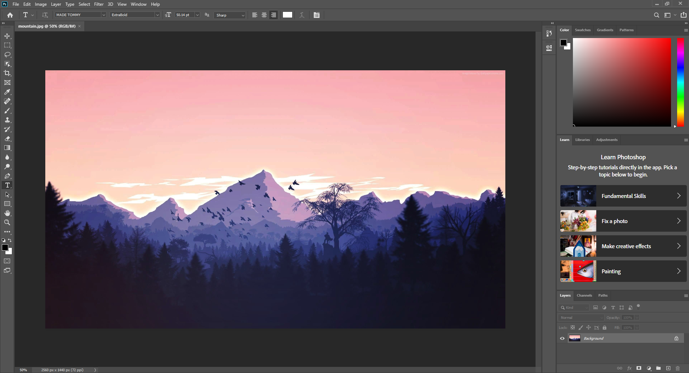
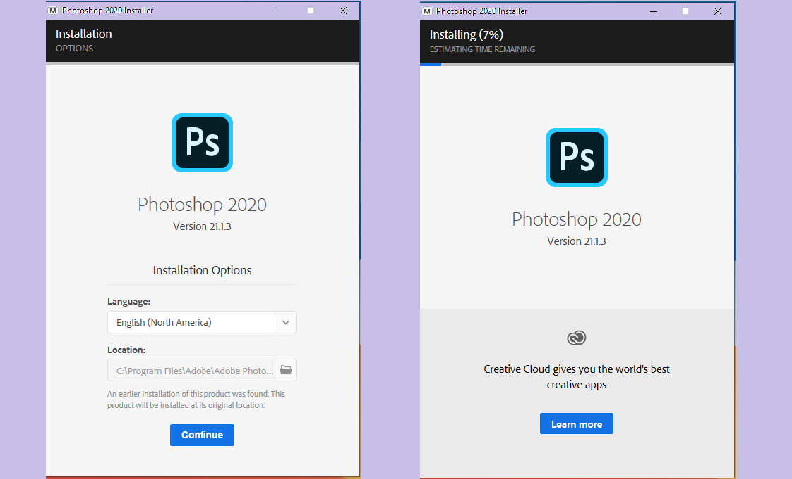

PhotShop 2020 For Free

Photoshop CC 2020 is a big update with a lot of exciting new features including the new Object Selection Tool, enhanced Warp Transformation, updated Preset libraries and lots of brand new keyboard shortcuts and timesavers. Use time codes below to jump to specific features and check out the Milanote board for resources and exercise files!
We will be showing you how you can get Photoshop CC 2020 For Free safetly within no time.
Before we get started here are the system requirements For Adobe Photoshop CC 2020.
Make sure your Computer meets minimum system requirements mentioned below :
Operating System: Windows 10 Latest Version recommended.
Memory (RAM): 4 GB of RAM required.
Hard Disk Drive Space: 3 GB of free space required.
Processor: 2 GHz or faster processor.
Graphics: 1024 × 768 display (1280 × 800 recommended) with OpenGL® 2.0
16-bit color.
3D features are disabled with less than 512MB of VRAM.
Click on below button to start Adobe Photoshop CC 2020 For Free. This is complete offline installer and standalone setup of Adobe Photoshop CC 2020 21.0.2 Free Download for Windows. This would be working perfectly fine with compatible version of Windows. The Link will take you straight to Google drive.
PhotoShop 2020 Google Drive
After the file has been downloaded, extract the zip file using winrar or any zip extractor. Once the file has been extracted you will see another folder name " Adobe Photoshop 2020" . Go inside the folder then click on setup.exe. This might take a while depending on your Computer's performance. Then continue on with the process

It will prompt you with a Adobe app to install Photoshop. You don't have to have a account or anything. Just click continue. One Done you are ready to use Photoshop but for some reason if photoshop have issue launching turn off your anti-virus and re-try the process again from setup.exe.
The software provides many image editing features for raster (pixel-based) images as well as vector graphics. It uses a layer-based editing system that enables image creation and altering with multiple overlays that support transparency. Layers can also act as masks or filters, altering underlying colors. Shadows and other effects can be added to the layers. Photoshop actions include automation features to reduce the need for repetitive tasks. An option known as Photoshop CC (Creative Cloud) allows users to work on content from any computer.
Photoshop been the industry standard image manipulation program for so long that its name has become a verb: It is common parlance to say that an image has been “photoshopped” or even just “shopped." Shopped, in this context, is synonymous with edited, manipulated or faked -- often regardless of the software actually used.
Photoshop top 15 features
01. Associated with Behance
At the point when you join Creative Cloud, you can rapidly join to Behance and, obviously, its ProSite individual portfolio device - both are free inside the CC membership. The most awesome aspect? In the event that you need to feature a WIP, last delineation or anything you've made in Photoshop on Behance, you can transfer it straightforwardly from Photoshop itself. Simply go to File>Share to Behance. In the event that you haven't connected your Behance account, you'll get bit by bit guidelines the first occasion when you attempt to share. Additionally, you can adjust Behance with ProSite, implying that a Creative Cloud enrollment gives an exceptionally basic approach to distribute new work to your portfolio site.
02. Keen Sharpen
The Smart Sharpen channel will save you such an excess of time that you will not realize how to manage everything!
As far as the new highlights in Photoshop CC, one extraordinary expansion is the Smart Sharpen channel. Found in the Filter>Sharpen menu, it empowers you to rapidly lessen commotion and corona impacts, utilizing versatile honing innovation. You can, obviously, progressively review the impact, just as contrast the outcome with Photoshop's inheritance honing apparatus with the check of a crate. You can utilize presets or save your own, utilizing Amount, Radius and Reduce Noise sliders (among numerous different alternatives) to get the necessary outcome.
03. Generator innovation
The Photoshop 14.1 update contains a splendid new element - and innovation - called Generator. This is a splendid work process expansion, and basically empowers you to rapidly make picture resources continuously as you work. Essentially add a record augmentation to the name of your layer or layer gathering, and Photoshop will naturally make a JPG, PNG or GIF from the substance of that layer. In the event that you roll out an improvement to that layer, the record is quickly refreshed. You can even add scaling factors. It's a gigantic new element.
04. Save to Cloud
Picture this: a customer needs to see a work in improvement yet doesn't actually comprehend document designs and such. Presently, utilizing Photoshop CC you can save your records straightforwardly to Creative Cloud and afterward, utilizing the work area application or program based discourse, decide to share documents. The customer just gets an email and can see the task in their program. How's that for a speedy and simple undertaking update? In addition, saving records to the Cloud empowers you to oversee them across various machines - work area, PC and even cell phones.
05. Keen upsampling
Scaling up lo-res pictures is presently straightforward (and module free) with wise upsampling
You've been sent a low-res picture by a customer who needs it exploded to an immense size. What do you do? It used to be that you would need to turn to any semblance of the (yet great) module Genuine Fractals to upsample your pictures without a glaring loss of value. Fortunately, in Photoshop CC you would now be able to do this straightforwardly in the application. Consolidate this with having the option to effortlessly share documents through Creative Cloud, and out of nowhere it's not difficult to show your customer precisely what the low-res picture will resemble at the mentioned size.
06. Broadened highlights included
Prior to Creative Cloud, two variants of Photoshop existed: Photoshop and Photoshop Extended. The last included amazing picture, video, examination and 3D instruments. With Creative Cloud and Photoshop CC you presently get the entirety of this in one form - so you don't need to pay any more to get all the energizing highlights of Photoshop Extended. It might appear to be a bit, yet in the event that you need to incorporate 3D into your work process, it's a great deal…
07. Multi-shape and way determination
The capacity to choose different ways, shapes and vector veils immediately is, once more, a basic yet helpful expansion. Indeed, even in multi-layered records with loads of ways, you can undoubtedly focus on the way and any layer you need directly on the material utilizing another Filter mode (rather like the Filter mode in the Layers board presented in CS6).
08. Restrictive activities
Activities are a significant piece of any expert Photoshop client's work process - and with Photoshop CC they have gotten much better. For handling documents they are splendid: you use in the event that/explanations to decide picture properties prior to applying your activity. They are totally founded on the guidelines you set up, so you are in finished control.
09. Editable adjusted square shapes
Photoshop CC: Editable adjusted square shapes
The editable adjusted square shapes include is extraordinary for website specialists
For a website specialist who needs to send out shapes as CSS information for use in another Adobe application like Muse, editable adjusted square shapes can be a lifeline. You can resize shapes, alter them and re-alter them - previously or after they're made.
10. Better 3D apparatuses
Photoshop CC carries with it some improved 3D apparatuses. For one, the 3D Scene Panel has been improved to make it simpler to switch between a 2D and 3D work process (on account of a more customary naming plan and choices). Furthermore, better live reviews assist you with accomplishing incredible looks in less time. In addition, you can without much of a stretch make better sparkle impacts, scene enlightenment, and lighting for knocks and surfaces. Recollect that After Effects currently accompanies Cinema 4D Lite, making your Creative Cloud 3D work process - especially across movement projects - a genuine breeze.
11. CSS From Layers
Website specialists cheer: the new CSS From Layers include empowers you to create CSS code for explicit plan components, and just reorder the code into Dreamweaver or Muse to get the outcomes you need. Suppose you planned an adjusted square shape component on a layer. Just Ctrl/right-click a layer or layer gathering and pick Copy CSS from the Context menu. It's just about as simple as that, and an extraordinary method to rapidly move from mockups in Photoshop to live code in Dreamweaver or Muse.
1
2. Shading import from web documents
With this sharp new component you can import shading samples straightforwardly from HTML, CSS or SVG records - which is incredible when you need to discover motivation for a shading plan or expect help to coordinate a current plan. It's another strong illustration of the incredible work process highlights of Photoshop and the remainder of Creative Cloud - and without a doubt one you'll utilize over and over.
13. Improved sort styles
The improved styles usefulness in CC makes it unbelievably simple to immediately set sort styles and apply them across your Photoshop record, empowering you to keep up consistency and precision across your plan projects.
14. Camera Shake Reduction
We've spoken about Photoshop CC's camera shake decrease already, however it is as yet a helpful component
The new Camera Shake Reduction include is extraordinary for when you have some temperamental shots you need to put something aside for a customer mockup or site. Regardless of whether your haze was brought about by lethargic screen speed or a long central length, Camera Shake Reduction examinations its direction and reestablishes sharpness - all in a natural discourse obviously.
15. Extended Smart Object uphold
Having the option to apply impacts non-ruinously, without really influencing the pixels, is an enormous reward. It empowers you to try different things with various impacts without submitting or saving a copy of the document. In Photoshop CC you can apply Blur Gallery and liquify impacts: your unique record will remain unblemished as you push, pull, pucker or swell the picture or video. You can alter or eliminate the impacts whenever, even in the wake of saving your record.